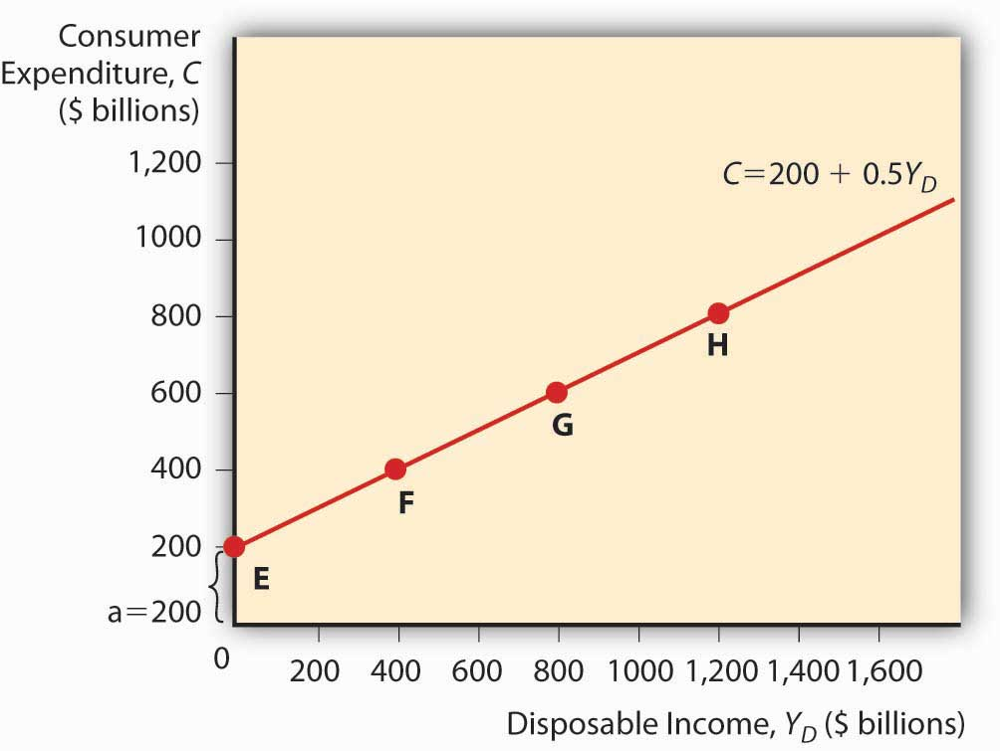
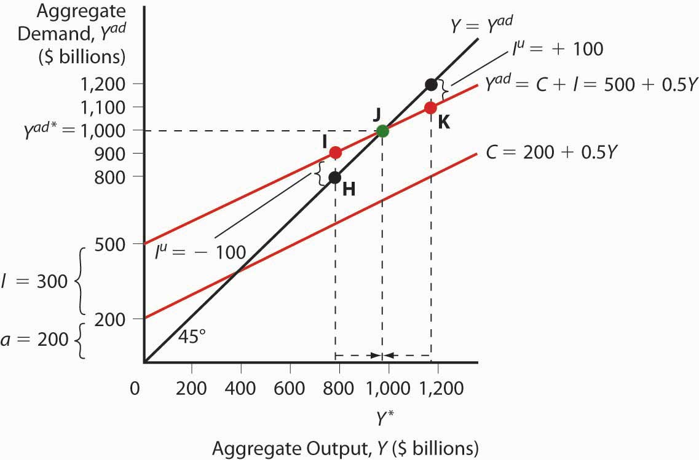
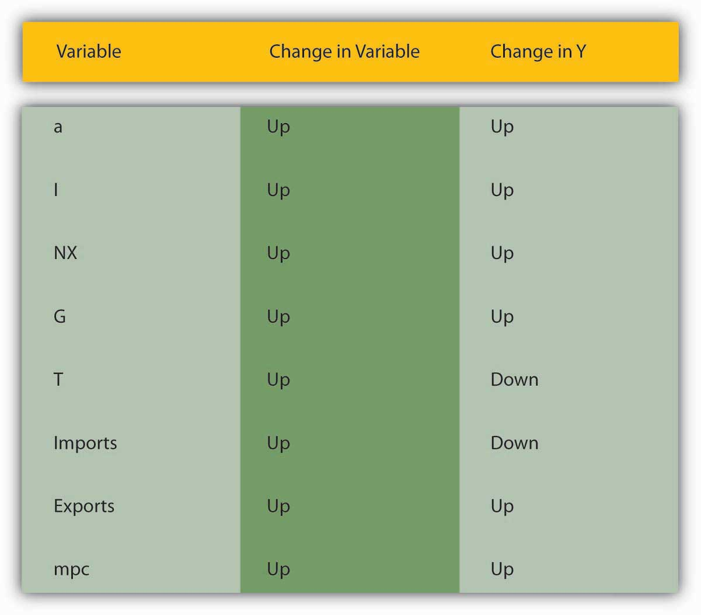
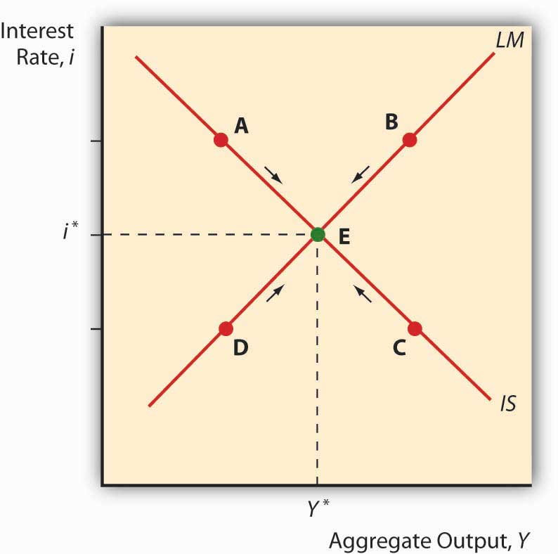
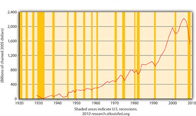
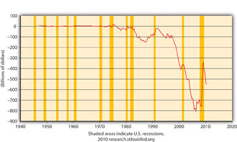
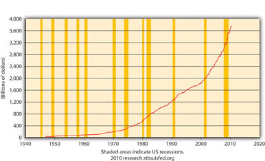
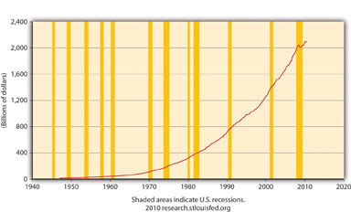

By the end of this chapter, students should be able to:
Developed in 1937 by economist and Keynes disciple John Hicks, the IS-LM model is still used today to model aggregate output (gross domestic product [GDP], gross national product [GNP], etc.) and interest rates in the short run.en.wikipedia.org/wiki/John_Hicks It begins with John Maynard Keynes’s recognition that
where:
Y = aggregate output (supplied)
Yad = aggregate demand
C = consumer expenditure
I = investment (on new physical capital like computers and factories, and planned inventory)
G = government spending
NX = net exports (exports minus imports)
Keynes further explained that C = a + (mpc × Yd)
where:
Yd = disposable income, all that income above a
a = autonomous consumer expenditure (food, clothing, shelter, and other necessaries)
mpc = marginal propensity to consume (change in consumer expenditure from an extra dollar of income or “disposable income;” it is a constant bounded by 0 and 1)
Practice calculating C in Exercise 1.
Calculate consumer expenditure using the formula C = a + (mpc × Yd).
| Autonomous Consumer Expenditure | Marginal Propensity to Consume | Disposable Income | Answer: C |
|---|---|---|---|
| 200 | 0.5 | 0 | 200 |
| 400 | 0.5 | 0 | 400 |
| 200 | 0.5 | 200 | 300 |
| 200 | 0.5 | 300 | 350 |
| 300 | 0.5 | 300 | 450 |
| 300 | 0.75 | 300 | 525 |
| 300 | 0.25 | 300 | 375 |
| 300 | 0.01 | 300 | 303 |
| 300 | 1 | 300 | 600 |
| 100 | 0.5 | 1000 | 600 |
| 100 | 0.75 | 1000 | 850 |
You can plot a consumption functionA mathematical equation thought to express the level of consumer spending. by drawing a graph, as in Figure 21.1 "A consumption function", with consumer expenditure on the vertical axis and disposable income on the horizontal. (Autonomous consumer expenditure a will be the intercept and mpc × Yd will be the slope.)
Figure 21.1 A consumption function
Investment is composed of so-called fixed investment on equipment and structures and planned inventory investment in raw materials, parts, or finished goods.
For the present, we will ignore G and NX and, following Keynes, changes in the price level. (Remember, we are talking about the short term here. Remember, too, that Keynes wrote in the context of the gold standard, not an inflationary free floating regime, so he was not concerned with price level changes.) The simple model that results, called a Keynesian cross diagram, looks like the diagram in Figure 21.2 "A Keynesian cross diagram".
Figure 21.2 A Keynesian cross diagram
The 45-degree line simply represents the equilibrium Y = Yad. The other line, the aggregate demand function, is the consumption function line plus planned investment spending I. Equilibrium is reached via inventories (part of I). If Y > Yad, inventory levels will be higher than firms want, so they’ll cut production. If Y < Yad, inventories will shrink below desired levels and firms will increase production. We can now predict changes in aggregate output given changes in the level of I and C and the marginal propensity to consume (the slope of the C component of Yad).
Suppose I increases. Due to the upward slope of Yad, aggregate output will increase more than the increase in I. This is called the expenditure multiplier and it is summed up by the following equation:
So if a is 200 billion, I is 400 billion, and mpc is .5, Y will be
If I increases to 600 billion, Y = 800 × 2 = $1,600 billion.
If the marginal propensity to consume were to increase to .75, Y would increase to
Y = 800 × 1/.25 = 800 × 4 = $3,200 billion because Yad would have a much steeper slope. A decline in mpc to .25, by contrast, would flatten Yad and lead to a lower equilibrium:
Practice calculating aggregate output in Exercise 2.
Calculate aggregate output with the formula: Y = (a + I) × 1/(1 ? mpc)
| Autonomous Spending | Marginal Propensity to Consume | Investment | Answer: Aggregate Output |
|---|---|---|---|
| 200 | 0.5 | 500 | 1400 |
| 300 | 0.5 | 500 | 1600 |
| 400 | 0.5 | 500 | 1800 |
| 500 | 0.5 | 500 | 2000 |
| 500 | 0.6 | 500 | 2500 |
| 200 | 0.7 | 500 | 2333.33 |
| 200 | 0.8 | 500 | 3500 |
| 200 | 0.4 | 500 | 1166.67 |
| 200 | 0.3 | 500 | 1000 |
| 200 | 0.5 | 600 | 1600 |
| 200 | 0.5 | 700 | 1800 |
| 200 | 0.5 | 800 | 2000 |
| 200 | 0.5 | 400 | 1200 |
| 200 | 0.5 | 300 | 1000 |
| 200 | 0.5 | 200 | 800 |
During the Great Depression, investment (I) fell from $232 billion to $38 billion (in 2000 USD). What happened to aggregate output? How do you know?
Aggregate output fell by more than $232 billion − $38 billion = $194 billion. We know that because investment fell and the marginal propensity to consume was > 0, so the fall was more than $194 billion, as expressed by the equation Y = (a + I) × 1/(1 − mpc).
To make the model more realistic, we can easily add NX to the equation. An increase in exports over imports will increase aggregate output Y by the increase in NX times the expenditure multiplier. Likewise, an increase in imports over exports (a decrease in NX) will decrease Y by the decrease in NX times the multiplier.
Government spending (G) also increases Y. We must realize, however, that some government spending comes from taxes, which consumers view as a reduction in income. With taxation, the consumption function becomes the following:
T means taxes. The effect of G is always larger than that of T because G expands by the multiplier, which is always > 1, while T is multiplied by MPC, which never exceeds 1. So increasing G, even if it is totally funded by T, will increase Y. (Remember, this is a short-run analysis.) Nevertheless, Keynes argued that, to help a country out of recession, government should cut taxes because that will cause Yd to rise, ceteris paribus. Or, in more extreme cases, it should borrow and spend (rather than tax and spend) so that it can increase G without increasing T and thus decreasing C.
Many governments, including that of the United States, responded to the Great Depression by increasing tariffs in what was called a beggar-thy-neighbor policy. Today we know that such policies beggared everyone. What were policymakers thinking?
They were thinking that tariffs would decrease imports and thereby increase NX (exports minus imports) and Y. That would make their trading partner’s NX decrease, thus beggaring them by decreasing their Y. It was a simple idea on paper, but in reality it was dead wrong. For starters, other countries retaliated with tariffs of their own. But even if they did not, it was a losing strategy because by making neighbors (trading partners) poorer, the policy limited their ability to import (i.e., decreased the first country’s exports) and thus led to no significant long-term change in NX.
Figure 21.3 "The determinants of aggregate demand" sums up the discussion of aggregate demand.
Figure 21.3 The determinants of aggregate demand
The Keynesian cross diagram framework is great, as far as it goes. Note that it has nothing to say about interest rates or money, a major shortcoming for us students of money, banking, and monetary policy! It does, however, help us to build a more powerful model that examines equilibrium in the markets for goods and money, the IS (investment-savings) and the LM (liquidity preference–money) curves, respectively (hence the name of the model).
Interest rates are negatively related to I and to NX. The reasoning here is straightforward. When interest rates (i) are high, companies would rather invest in bonds than in physical plant (because fewer projects are positive net present valueA project likely to be profitable at a given interest rate after comparing the present values of both expenditures and revenues. or +NPVSee positive net present value.) or inventory (because it has a high opportunity cost), so I (investment) is low. When rates are low, new physical plant and inventories look cheap and many more projects are +NPV (i has come down in the denominator of the present value formula), so I is high. Similarly, when i is low the domestic currency will be weak, all else equal. Exports will be facilitated and imports will decline because foreign goods will look expensive. Thus, NX will be high (exports > imports). When i is high, by contrast, the domestic currency will be in demand and hence strong. That will hurt exports and increase imports, so NX will drop and perhaps become negative (exports < imports).
Now think of Yad on a Keynesian cross diagram. As we saw above, aggregate output will rise as I and NX do. So we know that as i increases, Yad decreases, ceteris paribus. Plotting the interest rate on the vertical axis against aggregate output on the horizontal axis, as below, gives us a downward sloping curve. That’s the IS curve! For each interest rate, it tells us at what point the market for goods (I and NX, get it?) is in equilibrium—holding autonomous consumption, fiscal policy, and other determinants of aggregate demand constant. For all points to the right of the curve, there is an excess supply of goods for that interest rate, which causes firms to decrease inventories, leading to a fall in output toward the curve. For all points to the left of the IS curve, an excess demand for goods persists, which induces firms to increase inventories, leading to increased output toward the curve.
Obviously, the IS curve alone is as insufficient to determine i or Y as demand alone is to determine prices or quantities in the standard supply and demand microeconomic price model. We need another curve, one that slopes the other way, which is to say, upward. That curve is called the LM curve and it represents equilibrium points in the market for money. The demand for money is positively related to income because more income means more transactions and because more income means more assets, and money is one of those assets. So we can immediately plot an upward sloping LM curve, a curve that holds the money supply constant. To the left of the LM curve there is an excess supply of money given the interest rate and the amount of output. That’ll cause people to use their money to buy bonds, thus driving bond prices up, and hence i down to the LM curve. To the right of the LM curve, there is an excess demand for money, inducing people to sell bonds for cash, which drives bond prices down and hence i up to the LM curve.
Figure 21.4 IS-LM diagram: equilibrium in the markets for money and goods
When we put the IS and LM curves on the graph at the same time, as in Figure 21.4 "IS-LM diagram: equilibrium in the markets for money and goods", we immediately see that there is only one point, their intersection, where the markets for both goods and money are in equilibrium. Both the interest rate and aggregate output are determined by that intersection. We can then shift the IS and LM curves around to see how they affect interest rates and output, i* and Y*. In the next chapter, we’ll see how policymakers manipulate those curves to increase output. But we still won’t be done because, as mentioned above, the IS-LM model has one major drawback: it works only in the short term or when the price level is otherwise fixed.
Does Figure 21.5 "Real Gross Private Domestic Investment (GPDICA), 1925–2010" make sense? Why or why not? What does Figure 21.6 "Net Export of Goods and Services (NETEXP), 1945–2010" mean? Why is Figure 21.7 "Federal Government Current Expenditures (FGEXPND), 1945–2010" not a good representation of G?
Figure 21.5 Real Gross Private Domestic Investment (GPDICA), 1925–2010
Source: U.S. Department of Commerce, Bureua of Economic Analysis
Figure 21.6 Net Export of Goods and Services (NETEXP), 1945–2010
Source: U.S. Department of Commerce, Bureua of Economic Analysis
Figure 21.7 Federal Government Current Expenditures (FGEXPND), 1945–2010
Source: U.S. Department of Commerce, Bureua of Economic Analysis
Figure 21.5 "Real Gross Private Domestic Investment (GPDICA), 1925–2010" makes perfectly good sense because it depicts I in the equation Y = Yad = C + I + G + NX, and the shaded areas represent recessions, that is, decreases in Y. Note that before almost every recession in the twentieth century, I dropped.
Figure 21.6 "Net Export of Goods and Services (NETEXP), 1945–2010" means that NX in the United States is considerably negative, that exports < imports by a large margin, creating a significant drain on Y (GDP). Note that NX improved (became less negative) during the crisis and resulting recession but dipped downward again during the 2010 recovery.
Figure 21.7 "Federal Government Current Expenditures (FGEXPND), 1945–2010" is not a good representation of G because it ignores state and local government expenditures, which are significant in the United States, as Figure 21.8 "States and Local Government Current Expenditures (SLEXPND), 1945–2010" shows.
Figure 21.8 States and Local Government Current Expenditures (SLEXPND), 1945–2010
Source: U.S. Department of Commerce, Bureua of Economic Analysis
Dimand, Robert, Edward Nelson, Robert Lucas, Mauro Boianovsky, David Colander, Warren Young, et al. The IS-LM Model: Its Rise, Fall, and Strange Persistence. Raleigh, NC: Duke University Press, 2005.
Young, Warren, and Ben-Zion Zilbefarb. IS-LM and Modern Macroeconomics. New York: Springer, 2001.